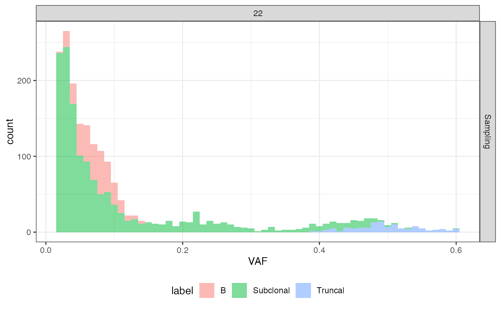

The function labels mutations using data about the cell in which it occurs for the first time.
Arguments
- seq_results
The output of
simulate_seq().- phylo_forest
The phylogenetic forest from which the sequencing was simulated.
Value
A copy of the data frame seq_results added with the identifier of
the cell in which the mutation occurs for the first time (column
"cell_id"), the identifier of its ancestor (column "ancestor"), its
mutant (column "mutant"), its epigenetic state (column "epistate"),
its birth time (column "birth_time"), the sample that collected the
cell whenever available (column "sample"), and a cell classification
based on phylogenetic sticks (column "label").
Examples
# set the seed of the random number generator
set.seed(0)
# simulate a tissue
sim <- SpatialSimulation()
sim$add_mutant(name = "A",
growth_rates = 1,
death_rates = 0)
sim$place_cell("A", 500, 500)
sim$run_up_to_size("A",1e4)
#>
[████████████████████████████████████████] 100% [00m:00s] Saving snapshot
sim$add_mutant(name = "B",
growth_rates = 3.5,
death_rates = 0)
sim$mutate_progeny(sim$choose_cell_in("A"), "B")
sim$run_up_to_size("B",1e4)
#>
[████████████████████████████████████████] 100% [00m:00s] Saving snapshot
# sample the tissue and build the sample forest
bbox <- sim$search_sample(c("A" = 100,"B" = 100), 50, 50)
sim$sample_cells("Sampling", bbox$lower_corner, bbox$upper_corner)
forest = sim$get_samples_forest()
# place the mutations
m_engine = MutationEngine(setup_code = "demo")
#>
[█---------------------------------------] 0% [00m:00s] Loading context index
[████████████████████████████████████████] 100% [00m:00s] Context index loaded
#>
[█---------------------------------------] 0% [00m:00s] Loading RS index
[█████████-------------------------------] 20% [00m:01s] Loading RS index
[█████████████████-----------------------] 41% [00m:02s] Loading RS index
[███████████████████████████-------------] 65% [00m:03s] Loading RS index
[███████████████████████████████████-----] 87% [00m:04s] Loading RS index
[████████████████████████████████████████] 100% [00m:04s] RS index loaded
#>
[█---------------------------------------] 0% [00m:00s] Loading germline
[████████████████████████████████████████] 100% [00m:00s] Germline loaded
m_engine$add_mutant(mutant_name = "A",
passenger_rates = c(SNV = 5e-8))
#>
[█---------------------------------------] 0% [00m:00s] Retrieving "A" SNVs
[████████████████████████████████████████] 100% [00m:00s] "A" SNVs retrieved
m_engine$add_mutant(mutant_name = "B",
passenger_rates = c(SNV = 5e-8))
#>
[█---------------------------------------] 0% [00m:00s] Retrieving "B" SNVs
[████████████████████████████████████████] 100% [00m:00s] "B" SNVs retrieved
m_engine$add_exposure(time = 0, c(SBS1 = 0.2,SBS5 = 0.8))
phylo_forest <- m_engine$place_mutations(forest, 100, 10)
#>
[█---------------------------------------] 0% [00m:00s] Placing mutations
[████████████████████████████████████████] 100% [00m:00s] Mutations placed
# simulate sequencing without the normal sample
seq_results <- simulate_seq(phylo_forest, coverage = 100, write_SAM = F,
with_normal_sample = FALSE)
#>
[█---------------------------------------] 0% [00m:00s] Found 22
[█---------------------------------------] 0% [00m:00s] Reading 22
[█---------------------------------------] 0% [00m:01s] Reading 22
[█---------------------------------------] 0% [00m:02s] Reading 22
[█---------------------------------------] 0% [00m:02s] Processing chr. 22
[█---------------------------------------] 0% [00m:03s] Processing chr. 22
[█---------------------------------------] 0% [00m:04s] Processing chr. 22
[█---------------------------------------] 0% [00m:05s] Processing chr. 22
[█---------------------------------------] 0% [00m:06s] Processing chr. 22
[█---------------------------------------] 0% [00m:07s] Processing chr. 22
[█---------------------------------------] 1% [00m:08s] Processing chr. 22
[█---------------------------------------] 1% [00m:09s] Processing chr. 22
[█---------------------------------------] 1% [00m:10s] Processing chr. 22
[█---------------------------------------] 1% [00m:11s] Processing chr. 22
[█---------------------------------------] 1% [00m:12s] Processing chr. 22
[█---------------------------------------] 2% [00m:13s] Processing chr. 22
[█---------------------------------------] 2% [00m:14s] Processing chr. 22
[█---------------------------------------] 2% [00m:15s] Processing chr. 22
[█---------------------------------------] 2% [00m:16s] Processing chr. 22
[█---------------------------------------] 2% [00m:17s] Processing chr. 22
[█---------------------------------------] 2% [00m:18s] Processing chr. 22
[██--------------------------------------] 3% [00m:19s] Processing chr. 22
[██--------------------------------------] 3% [00m:20s] Processing chr. 22
[██--------------------------------------] 3% [00m:21s] Processing chr. 22
[██--------------------------------------] 3% [00m:22s] Processing chr. 22
[██--------------------------------------] 3% [00m:23s] Processing chr. 22
[██--------------------------------------] 4% [00m:24s] Processing chr. 22
[██--------------------------------------] 4% [00m:25s] Processing chr. 22
[██--------------------------------------] 4% [00m:26s] Processing chr. 22
[██--------------------------------------] 4% [00m:27s] Processing chr. 22
[██--------------------------------------] 4% [00m:28s] Processing chr. 22
[███-------------------------------------] 5% [00m:29s] Processing chr. 22
[███-------------------------------------] 5% [00m:30s] Processing chr. 22
[███-------------------------------------] 5% [00m:31s] Processing chr. 22
[███-------------------------------------] 5% [00m:32s] Processing chr. 22
[███-------------------------------------] 5% [00m:33s] Processing chr. 22
[███-------------------------------------] 6% [00m:34s] Processing chr. 22
[███-------------------------------------] 6% [00m:35s] Processing chr. 22
[███-------------------------------------] 6% [00m:36s] Processing chr. 22
[███-------------------------------------] 6% [00m:37s] Processing chr. 22
[███-------------------------------------] 6% [00m:38s] Processing chr. 22
[███-------------------------------------] 7% [00m:39s] Processing chr. 22
[███-------------------------------------] 7% [00m:40s] Processing chr. 22
[███-------------------------------------] 7% [00m:41s] Processing chr. 22
[███-------------------------------------] 7% [00m:42s] Processing chr. 22
[███-------------------------------------] 7% [00m:43s] Processing chr. 22
[████------------------------------------] 8% [00m:44s] Processing chr. 22
[████------------------------------------] 8% [00m:45s] Processing chr. 22
[████------------------------------------] 8% [00m:46s] Processing chr. 22
[████------------------------------------] 8% [00m:47s] Processing chr. 22
[████------------------------------------] 8% [00m:48s] Processing chr. 22
[████------------------------------------] 9% [00m:49s] Processing chr. 22
[████------------------------------------] 9% [00m:50s] Processing chr. 22
[████------------------------------------] 9% [00m:51s] Processing chr. 22
[████------------------------------------] 9% [00m:52s] Processing chr. 22
[████------------------------------------] 9% [00m:53s] Processing chr. 22
[█████-----------------------------------] 10% [00m:54s] Processing chr. 22
[█████-----------------------------------] 10% [00m:55s] Processing chr. 22
[█████-----------------------------------] 10% [00m:56s] Processing chr. 22
[█████-----------------------------------] 10% [00m:57s] Processing chr. 22
[█████-----------------------------------] 10% [00m:58s] Processing chr. 22
[█████-----------------------------------] 11% [00m:59s] Processing chr. 22
[█████-----------------------------------] 11% [01m:00s] Processing chr. 22
[█████-----------------------------------] 11% [01m:01s] Processing chr. 22
[█████-----------------------------------] 11% [01m:02s] Processing chr. 22
[█████-----------------------------------] 12% [01m:03s] Processing chr. 22
[█████-----------------------------------] 12% [01m:04s] Processing chr. 22
[█████-----------------------------------] 12% [01m:05s] Processing chr. 22
[█████-----------------------------------] 12% [01m:06s] Processing chr. 22
[█████-----------------------------------] 12% [01m:07s] Processing chr. 22
[██████----------------------------------] 13% [01m:08s] Processing chr. 22
[██████----------------------------------] 13% [01m:09s] Processing chr. 22
[██████----------------------------------] 13% [01m:10s] Processing chr. 22
[██████----------------------------------] 13% [01m:11s] Processing chr. 22
[██████----------------------------------] 13% [01m:12s] Processing chr. 22
[██████----------------------------------] 14% [01m:13s] Processing chr. 22
[██████----------------------------------] 14% [01m:14s] Processing chr. 22
[██████----------------------------------] 14% [01m:15s] Processing chr. 22
[██████----------------------------------] 14% [01m:16s] Processing chr. 22
[███████---------------------------------] 15% [01m:17s] Processing chr. 22
[███████---------------------------------] 15% [01m:18s] Processing chr. 22
[███████---------------------------------] 15% [01m:19s] Processing chr. 22
[███████---------------------------------] 15% [01m:20s] Processing chr. 22
[███████---------------------------------] 15% [01m:21s] Processing chr. 22
[███████---------------------------------] 16% [01m:22s] Processing chr. 22
[███████---------------------------------] 16% [01m:23s] Processing chr. 22
[███████---------------------------------] 16% [01m:24s] Processing chr. 22
[███████---------------------------------] 16% [01m:25s] Processing chr. 22
[███████---------------------------------] 16% [01m:26s] Processing chr. 22
[███████---------------------------------] 17% [01m:27s] Processing chr. 22
[███████---------------------------------] 17% [01m:28s] Processing chr. 22
[███████---------------------------------] 17% [01m:29s] Processing chr. 22
[███████---------------------------------] 17% [01m:30s] Processing chr. 22
[████████--------------------------------] 18% [01m:31s] Processing chr. 22
[████████--------------------------------] 18% [01m:32s] Processing chr. 22
[████████--------------------------------] 18% [01m:33s] Processing chr. 22
[████████--------------------------------] 18% [01m:34s] Processing chr. 22
[████████--------------------------------] 18% [01m:35s] Processing chr. 22
[████████--------------------------------] 19% [01m:36s] Processing chr. 22
[████████--------------------------------] 19% [01m:37s] Processing chr. 22
[████████--------------------------------] 19% [01m:38s] Processing chr. 22
[████████--------------------------------] 19% [01m:39s] Processing chr. 22
[█████████-------------------------------] 20% [01m:40s] Processing chr. 22
[█████████-------------------------------] 20% [01m:41s] Processing chr. 22
[█████████-------------------------------] 20% [01m:42s] Processing chr. 22
[█████████-------------------------------] 20% [01m:43s] Processing chr. 22
[█████████-------------------------------] 20% [01m:44s] Processing chr. 22
[█████████-------------------------------] 21% [01m:45s] Processing chr. 22
[█████████-------------------------------] 21% [01m:46s] Processing chr. 22
[█████████-------------------------------] 21% [01m:47s] Processing chr. 22
[█████████-------------------------------] 21% [01m:48s] Processing chr. 22
[█████████-------------------------------] 21% [01m:49s] Processing chr. 22
[█████████-------------------------------] 22% [01m:50s] Processing chr. 22
[█████████-------------------------------] 22% [01m:51s] Processing chr. 22
[█████████-------------------------------] 22% [01m:52s] Processing chr. 22
[█████████-------------------------------] 22% [01m:53s] Processing chr. 22
[█████████-------------------------------] 22% [01m:54s] Processing chr. 22
[██████████------------------------------] 23% [01m:55s] Processing chr. 22
[██████████------------------------------] 23% [01m:56s] Processing chr. 22
[██████████------------------------------] 23% [01m:57s] Processing chr. 22
[██████████------------------------------] 23% [01m:58s] Processing chr. 22
[██████████------------------------------] 23% [01m:59s] Processing chr. 22
[██████████------------------------------] 24% [02m:00s] Processing chr. 22
[██████████------------------------------] 24% [02m:01s] Processing chr. 22
[██████████------------------------------] 24% [02m:02s] Processing chr. 22
[██████████------------------------------] 24% [02m:03s] Processing chr. 22
[███████████-----------------------------] 25% [02m:04s] Processing chr. 22
[███████████-----------------------------] 25% [02m:05s] Processing chr. 22
[███████████-----------------------------] 25% [02m:06s] Processing chr. 22
[███████████-----------------------------] 25% [02m:07s] Processing chr. 22
[███████████-----------------------------] 25% [02m:08s] Processing chr. 22
[███████████-----------------------------] 26% [02m:09s] Processing chr. 22
[███████████-----------------------------] 26% [02m:10s] Processing chr. 22
[███████████-----------------------------] 26% [02m:11s] Processing chr. 22
[███████████-----------------------------] 26% [02m:12s] Processing chr. 22
[███████████-----------------------------] 27% [02m:13s] Processing chr. 22
[███████████-----------------------------] 27% [02m:14s] Processing chr. 22
[███████████-----------------------------] 27% [02m:15s] Processing chr. 22
[███████████-----------------------------] 27% [02m:16s] Processing chr. 22
[███████████-----------------------------] 27% [02m:17s] Processing chr. 22
[███████████-----------------------------] 27% [02m:18s] Processing chr. 22
[███████████-----------------------------] 27% [02m:19s] Processing chr. 22
[████████████----------------------------] 28% [02m:20s] Processing chr. 22
[████████████----------------------------] 28% [02m:21s] Processing chr. 22
[████████████----------------------------] 28% [02m:22s] Processing chr. 22
[████████████----------------------------] 28% [02m:23s] Processing chr. 22
[████████████----------------------------] 29% [02m:24s] Processing chr. 22
[████████████----------------------------] 29% [02m:25s] Processing chr. 22
[████████████----------------------------] 29% [02m:26s] Processing chr. 22
[████████████----------------------------] 29% [02m:27s] Processing chr. 22
[████████████----------------------------] 29% [02m:28s] Processing chr. 22
[█████████████---------------------------] 30% [02m:29s] Processing chr. 22
[█████████████---------------------------] 30% [02m:30s] Processing chr. 22
[█████████████---------------------------] 30% [02m:31s] Processing chr. 22
[█████████████---------------------------] 30% [02m:32s] Processing chr. 22
[█████████████---------------------------] 30% [02m:33s] Processing chr. 22
[█████████████---------------------------] 31% [02m:34s] Processing chr. 22
[█████████████---------------------------] 31% [02m:35s] Processing chr. 22
[█████████████---------------------------] 31% [02m:36s] Processing chr. 22
[█████████████---------------------------] 31% [02m:37s] Processing chr. 22
[█████████████---------------------------] 32% [02m:38s] Processing chr. 22
[█████████████---------------------------] 32% [02m:39s] Processing chr. 22
[█████████████---------------------------] 32% [02m:40s] Processing chr. 22
[█████████████---------------------------] 32% [02m:41s] Processing chr. 22
[█████████████---------------------------] 32% [02m:42s] Processing chr. 22
[██████████████--------------------------] 33% [02m:43s] Processing chr. 22
[██████████████--------------------------] 33% [02m:44s] Processing chr. 22
[██████████████--------------------------] 33% [02m:45s] Processing chr. 22
[██████████████--------------------------] 33% [02m:46s] Processing chr. 22
[██████████████--------------------------] 33% [02m:47s] Processing chr. 22
[██████████████--------------------------] 34% [02m:48s] Processing chr. 22
[██████████████--------------------------] 34% [02m:49s] Processing chr. 22
[██████████████--------------------------] 34% [02m:50s] Processing chr. 22
[██████████████--------------------------] 34% [02m:51s] Processing chr. 22
[███████████████-------------------------] 35% [02m:52s] Processing chr. 22
[███████████████-------------------------] 35% [02m:53s] Processing chr. 22
[███████████████-------------------------] 35% [02m:54s] Processing chr. 22
[███████████████-------------------------] 35% [02m:55s] Processing chr. 22
[███████████████-------------------------] 35% [02m:56s] Processing chr. 22
[███████████████-------------------------] 36% [02m:57s] Processing chr. 22
[███████████████-------------------------] 36% [02m:58s] Processing chr. 22
[███████████████-------------------------] 36% [02m:59s] Processing chr. 22
[███████████████-------------------------] 36% [03m:00s] Processing chr. 22
[███████████████-------------------------] 36% [03m:01s] Processing chr. 22
[███████████████-------------------------] 37% [03m:02s] Processing chr. 22
[███████████████-------------------------] 37% [03m:03s] Processing chr. 22
[███████████████-------------------------] 37% [03m:04s] Processing chr. 22
[███████████████-------------------------] 37% [03m:05s] Processing chr. 22
[████████████████------------------------] 38% [03m:06s] Processing chr. 22
[████████████████------------------------] 38% [03m:07s] Processing chr. 22
[████████████████------------------------] 38% [03m:08s] Processing chr. 22
[████████████████------------------------] 38% [03m:09s] Processing chr. 22
[████████████████------------------------] 38% [03m:10s] Processing chr. 22
[████████████████------------------------] 39% [03m:11s] Processing chr. 22
[████████████████------------------------] 39% [03m:12s] Processing chr. 22
[████████████████------------------------] 39% [03m:13s] Processing chr. 22
[████████████████------------------------] 39% [03m:14s] Processing chr. 22
[█████████████████-----------------------] 40% [03m:15s] Processing chr. 22
[█████████████████-----------------------] 40% [03m:16s] Processing chr. 22
[█████████████████-----------------------] 40% [03m:17s] Processing chr. 22
[█████████████████-----------------------] 40% [03m:18s] Processing chr. 22
[█████████████████-----------------------] 40% [03m:19s] Processing chr. 22
[█████████████████-----------------------] 41% [03m:20s] Processing chr. 22
[█████████████████-----------------------] 41% [03m:21s] Processing chr. 22
[█████████████████-----------------------] 41% [03m:22s] Processing chr. 22
[█████████████████-----------------------] 41% [03m:23s] Processing chr. 22
[█████████████████-----------------------] 42% [03m:24s] Processing chr. 22
[█████████████████-----------------------] 42% [03m:25s] Processing chr. 22
[█████████████████-----------------------] 42% [03m:26s] Processing chr. 22
[█████████████████-----------------------] 42% [03m:27s] Processing chr. 22
[█████████████████-----------------------] 42% [03m:28s] Processing chr. 22
[██████████████████----------------------] 43% [03m:29s] Processing chr. 22
[██████████████████----------------------] 43% [03m:30s] Processing chr. 22
[██████████████████----------------------] 43% [03m:31s] Processing chr. 22
[██████████████████----------------------] 43% [03m:32s] Processing chr. 22
[██████████████████----------------------] 44% [03m:33s] Processing chr. 22
[██████████████████----------------------] 44% [03m:34s] Processing chr. 22
[██████████████████----------------------] 44% [03m:35s] Processing chr. 22
[██████████████████----------------------] 44% [03m:36s] Processing chr. 22
[██████████████████----------------------] 44% [03m:37s] Processing chr. 22
[███████████████████---------------------] 45% [03m:38s] Processing chr. 22
[███████████████████---------------------] 45% [03m:39s] Processing chr. 22
[███████████████████---------------------] 45% [03m:40s] Processing chr. 22
[███████████████████---------------------] 45% [03m:41s] Processing chr. 22
[███████████████████---------------------] 46% [03m:42s] Processing chr. 22
[███████████████████---------------------] 46% [03m:43s] Processing chr. 22
[███████████████████---------------------] 46% [03m:44s] Processing chr. 22
[███████████████████---------------------] 46% [03m:45s] Processing chr. 22
[███████████████████---------------------] 46% [03m:46s] Processing chr. 22
[███████████████████---------------------] 47% [03m:47s] Processing chr. 22
[███████████████████---------------------] 47% [03m:48s] Processing chr. 22
[███████████████████---------------------] 47% [03m:49s] Processing chr. 22
[███████████████████---------------------] 47% [03m:50s] Processing chr. 22
[████████████████████--------------------] 48% [03m:51s] Processing chr. 22
[████████████████████--------------------] 48% [03m:52s] Processing chr. 22
[████████████████████--------------------] 48% [03m:53s] Processing chr. 22
[████████████████████--------------------] 48% [03m:54s] Processing chr. 22
[████████████████████--------------------] 49% [03m:55s] Processing chr. 22
[████████████████████--------------------] 49% [03m:56s] Processing chr. 22
[████████████████████--------------------] 49% [03m:57s] Processing chr. 22
[████████████████████--------------------] 49% [03m:58s] Processing chr. 22
[████████████████████--------------------] 49% [03m:59s] Processing chr. 22
[█████████████████████-------------------] 50% [04m:00s] Processing chr. 22
[█████████████████████-------------------] 50% [04m:01s] Processing chr. 22
[█████████████████████-------------------] 50% [04m:02s] Processing chr. 22
[█████████████████████-------------------] 50% [04m:03s] Processing chr. 22
[█████████████████████-------------------] 51% [04m:04s] Processing chr. 22
[█████████████████████-------------------] 51% [04m:05s] Processing chr. 22
[█████████████████████-------------------] 51% [04m:06s] Processing chr. 22
[█████████████████████-------------------] 51% [04m:07s] Processing chr. 22
[█████████████████████-------------------] 51% [04m:08s] Processing chr. 22
[█████████████████████-------------------] 52% [04m:09s] Processing chr. 22
[█████████████████████-------------------] 52% [04m:10s] Processing chr. 22
[█████████████████████-------------------] 52% [04m:11s] Processing chr. 22
[█████████████████████-------------------] 52% [04m:12s] Processing chr. 22
[██████████████████████------------------] 52% [04m:13s] Processing chr. 22
[██████████████████████------------------] 52% [04m:14s] Processing chr. 22
[██████████████████████------------------] 52% [04m:15s] Processing chr. 22
[██████████████████████------------------] 52% [04m:16s] Processing chr. 22
[██████████████████████------------------] 52% [04m:17s] Processing chr. 22
[██████████████████████------------------] 54% [04m:18s] Processing chr. 22
[██████████████████████------------------] 54% [04m:19s] Processing chr. 22
[██████████████████████------------------] 54% [04m:20s] Processing chr. 22
[██████████████████████------------------] 54% [04m:21s] Processing chr. 22
[██████████████████████------------------] 54% [04m:22s] Processing chr. 22
[███████████████████████-----------------] 55% [04m:23s] Processing chr. 22
[███████████████████████-----------------] 55% [04m:24s] Processing chr. 22
[███████████████████████-----------------] 55% [04m:25s] Processing chr. 22
[███████████████████████-----------------] 55% [04m:26s] Processing chr. 22
[███████████████████████-----------------] 55% [04m:27s] Processing chr. 22
[███████████████████████-----------------] 56% [04m:28s] Processing chr. 22
[███████████████████████-----------------] 56% [04m:29s] Processing chr. 22
[███████████████████████-----------------] 56% [04m:30s] Processing chr. 22
[███████████████████████-----------------] 56% [04m:31s] Processing chr. 22
[███████████████████████-----------------] 56% [04m:32s] Processing chr. 22
[███████████████████████-----------------] 57% [04m:33s] Processing chr. 22
[███████████████████████-----------------] 57% [04m:34s] Processing chr. 22
[███████████████████████-----------------] 57% [04m:35s] Processing chr. 22
[███████████████████████-----------------] 57% [04m:36s] Processing chr. 22
[████████████████████████----------------] 58% [04m:37s] Processing chr. 22
[████████████████████████----------------] 58% [04m:38s] Processing chr. 22
[████████████████████████----------------] 58% [04m:39s] Processing chr. 22
[████████████████████████----------------] 58% [04m:40s] Processing chr. 22
[████████████████████████----------------] 58% [04m:41s] Processing chr. 22
[████████████████████████----------------] 58% [04m:42s] Processing chr. 22
[████████████████████████----------------] 58% [04m:43s] Processing chr. 22
[████████████████████████----------------] 58% [04m:44s] Processing chr. 22
[████████████████████████----------------] 58% [04m:45s] Processing chr. 22
[████████████████████████----------------] 58% [04m:46s] Processing chr. 22
[█████████████████████████---------------] 60% [04m:47s] Processing chr. 22
[█████████████████████████---------------] 60% [04m:48s] Processing chr. 22
[█████████████████████████---------------] 60% [04m:49s] Processing chr. 22
[█████████████████████████---------------] 60% [04m:50s] Processing chr. 22
[█████████████████████████---------------] 61% [04m:51s] Processing chr. 22
[█████████████████████████---------------] 61% [04m:52s] Processing chr. 22
[█████████████████████████---------------] 61% [04m:53s] Processing chr. 22
[█████████████████████████---------------] 61% [04m:54s] Processing chr. 22
[█████████████████████████---------------] 61% [04m:55s] Processing chr. 22
[█████████████████████████---------------] 62% [04m:56s] Processing chr. 22
[█████████████████████████---------------] 62% [04m:57s] Processing chr. 22
[█████████████████████████---------------] 62% [04m:58s] Processing chr. 22
[█████████████████████████---------------] 62% [04m:59s] Processing chr. 22
[█████████████████████████---------------] 62% [05m:00s] Processing chr. 22
[██████████████████████████--------------] 63% [05m:01s] Processing chr. 22
[██████████████████████████--------------] 63% [05m:02s] Processing chr. 22
[██████████████████████████--------------] 63% [05m:03s] Processing chr. 22
[██████████████████████████--------------] 63% [05m:04s] Processing chr. 22
[██████████████████████████--------------] 64% [05m:05s] Processing chr. 22
[██████████████████████████--------------] 64% [05m:06s] Processing chr. 22
[██████████████████████████--------------] 64% [05m:07s] Processing chr. 22
[██████████████████████████--------------] 64% [05m:08s] Processing chr. 22
[██████████████████████████--------------] 64% [05m:09s] Processing chr. 22
[███████████████████████████-------------] 65% [05m:10s] Processing chr. 22
[███████████████████████████-------------] 65% [05m:11s] Processing chr. 22
[███████████████████████████-------------] 65% [05m:12s] Processing chr. 22
[███████████████████████████-------------] 65% [05m:13s] Processing chr. 22
[███████████████████████████-------------] 65% [05m:14s] Processing chr. 22
[███████████████████████████-------------] 66% [05m:15s] Processing chr. 22
[███████████████████████████-------------] 66% [05m:16s] Processing chr. 22
[███████████████████████████-------------] 66% [05m:17s] Processing chr. 22
[███████████████████████████-------------] 66% [05m:18s] Processing chr. 22
[███████████████████████████-------------] 67% [05m:19s] Processing chr. 22
[███████████████████████████-------------] 67% [05m:20s] Processing chr. 22
[███████████████████████████-------------] 67% [05m:21s] Processing chr. 22
[███████████████████████████-------------] 67% [05m:22s] Processing chr. 22
[████████████████████████████------------] 68% [05m:23s] Processing chr. 22
[████████████████████████████------------] 68% [05m:24s] Processing chr. 22
[████████████████████████████------------] 68% [05m:25s] Processing chr. 22
[████████████████████████████------------] 68% [05m:26s] Processing chr. 22
[████████████████████████████------------] 68% [05m:27s] Processing chr. 22
[████████████████████████████------------] 68% [05m:28s] Processing chr. 22
[████████████████████████████------------] 69% [05m:29s] Processing chr. 22
[████████████████████████████------------] 69% [05m:30s] Processing chr. 22
[████████████████████████████------------] 69% [05m:31s] Processing chr. 22
[████████████████████████████------------] 69% [05m:32s] Processing chr. 22
[████████████████████████████------------] 69% [05m:33s] Processing chr. 22
[█████████████████████████████-----------] 70% [05m:34s] Processing chr. 22
[█████████████████████████████-----------] 70% [05m:35s] Processing chr. 22
[█████████████████████████████-----------] 70% [05m:36s] Processing chr. 22
[█████████████████████████████-----------] 70% [05m:37s] Processing chr. 22
[█████████████████████████████-----------] 71% [05m:38s] Processing chr. 22
[█████████████████████████████-----------] 71% [05m:39s] Processing chr. 22
[█████████████████████████████-----------] 71% [05m:40s] Processing chr. 22
[█████████████████████████████-----------] 71% [05m:41s] Processing chr. 22
[█████████████████████████████-----------] 71% [05m:42s] Processing chr. 22
[█████████████████████████████-----------] 72% [05m:43s] Processing chr. 22
[█████████████████████████████-----------] 72% [05m:44s] Processing chr. 22
[█████████████████████████████-----------] 72% [05m:45s] Processing chr. 22
[█████████████████████████████-----------] 72% [05m:46s] Processing chr. 22
[██████████████████████████████----------] 73% [05m:47s] Processing chr. 22
[██████████████████████████████----------] 73% [05m:48s] Processing chr. 22
[██████████████████████████████----------] 73% [05m:49s] Processing chr. 22
[██████████████████████████████----------] 73% [05m:50s] Processing chr. 22
[██████████████████████████████----------] 73% [05m:51s] Processing chr. 22
[██████████████████████████████----------] 74% [05m:52s] Processing chr. 22
[██████████████████████████████----------] 74% [05m:53s] Processing chr. 22
[██████████████████████████████----------] 74% [05m:54s] Processing chr. 22
[██████████████████████████████----------] 74% [05m:55s] Processing chr. 22
[███████████████████████████████---------] 75% [05m:56s] Processing chr. 22
[███████████████████████████████---------] 75% [05m:57s] Processing chr. 22
[███████████████████████████████---------] 75% [05m:58s] Processing chr. 22
[███████████████████████████████---------] 75% [05m:59s] Processing chr. 22
[███████████████████████████████---------] 75% [06m:00s] Processing chr. 22
[███████████████████████████████---------] 76% [06m:01s] Processing chr. 22
[███████████████████████████████---------] 76% [06m:02s] Processing chr. 22
[███████████████████████████████---------] 76% [06m:03s] Processing chr. 22
[███████████████████████████████---------] 76% [06m:04s] Processing chr. 22
[███████████████████████████████---------] 76% [06m:05s] Processing chr. 22
[███████████████████████████████---------] 77% [06m:06s] Processing chr. 22
[███████████████████████████████---------] 77% [06m:07s] Processing chr. 22
[███████████████████████████████---------] 77% [06m:08s] Processing chr. 22
[███████████████████████████████---------] 77% [06m:09s] Processing chr. 22
[████████████████████████████████--------] 78% [06m:10s] Processing chr. 22
[████████████████████████████████--------] 78% [06m:11s] Processing chr. 22
[████████████████████████████████--------] 78% [06m:12s] Processing chr. 22
[████████████████████████████████--------] 78% [06m:13s] Processing chr. 22
[████████████████████████████████--------] 78% [06m:14s] Processing chr. 22
[████████████████████████████████--------] 79% [06m:15s] Processing chr. 22
[████████████████████████████████--------] 79% [06m:16s] Processing chr. 22
[████████████████████████████████--------] 79% [06m:17s] Processing chr. 22
[████████████████████████████████--------] 79% [06m:18s] Processing chr. 22
[████████████████████████████████--------] 79% [06m:19s] Processing chr. 22
[█████████████████████████████████-------] 80% [06m:20s] Processing chr. 22
[█████████████████████████████████-------] 80% [06m:21s] Processing chr. 22
[█████████████████████████████████-------] 80% [06m:22s] Processing chr. 22
[█████████████████████████████████-------] 80% [06m:23s] Processing chr. 22
[█████████████████████████████████-------] 81% [06m:24s] Processing chr. 22
[█████████████████████████████████-------] 81% [06m:25s] Processing chr. 22
[█████████████████████████████████-------] 81% [06m:26s] Processing chr. 22
[█████████████████████████████████-------] 81% [06m:27s] Processing chr. 22
[█████████████████████████████████-------] 81% [06m:28s] Processing chr. 22
[█████████████████████████████████-------] 82% [06m:29s] Processing chr. 22
[█████████████████████████████████-------] 82% [06m:30s] Processing chr. 22
[█████████████████████████████████-------] 82% [06m:31s] Processing chr. 22
[█████████████████████████████████-------] 82% [06m:32s] Processing chr. 22
[██████████████████████████████████------] 83% [06m:33s] Processing chr. 22
[██████████████████████████████████------] 83% [06m:34s] Processing chr. 22
[██████████████████████████████████------] 83% [06m:35s] Processing chr. 22
[██████████████████████████████████------] 83% [06m:36s] Processing chr. 22
[██████████████████████████████████------] 83% [06m:37s] Processing chr. 22
[██████████████████████████████████------] 84% [06m:38s] Processing chr. 22
[██████████████████████████████████------] 84% [06m:39s] Processing chr. 22
[██████████████████████████████████------] 84% [06m:40s] Processing chr. 22
[██████████████████████████████████------] 84% [06m:41s] Processing chr. 22
[██████████████████████████████████------] 84% [06m:42s] Processing chr. 22
[███████████████████████████████████-----] 85% [06m:43s] Processing chr. 22
[███████████████████████████████████-----] 85% [06m:44s] Processing chr. 22
[███████████████████████████████████-----] 85% [06m:45s] Processing chr. 22
[███████████████████████████████████-----] 85% [06m:46s] Processing chr. 22
[███████████████████████████████████-----] 86% [06m:47s] Processing chr. 22
[███████████████████████████████████-----] 86% [06m:48s] Processing chr. 22
[███████████████████████████████████-----] 86% [06m:49s] Processing chr. 22
[███████████████████████████████████-----] 86% [06m:50s] Processing chr. 22
[███████████████████████████████████-----] 86% [06m:51s] Processing chr. 22
[███████████████████████████████████-----] 87% [06m:52s] Processing chr. 22
[███████████████████████████████████-----] 87% [06m:53s] Processing chr. 22
[███████████████████████████████████-----] 87% [06m:54s] Processing chr. 22
[███████████████████████████████████-----] 87% [06m:55s] Processing chr. 22
[████████████████████████████████████----] 88% [06m:56s] Processing chr. 22
[████████████████████████████████████----] 88% [06m:57s] Processing chr. 22
[████████████████████████████████████----] 88% [06m:58s] Processing chr. 22
[████████████████████████████████████----] 88% [06m:59s] Processing chr. 22
[████████████████████████████████████----] 88% [07m:00s] Processing chr. 22
[████████████████████████████████████----] 89% [07m:01s] Processing chr. 22
[████████████████████████████████████----] 89% [07m:02s] Processing chr. 22
[████████████████████████████████████----] 89% [07m:03s] Processing chr. 22
[████████████████████████████████████----] 89% [07m:04s] Processing chr. 22
[█████████████████████████████████████---] 90% [07m:05s] Processing chr. 22
[█████████████████████████████████████---] 90% [07m:06s] Processing chr. 22
[█████████████████████████████████████---] 90% [07m:07s] Processing chr. 22
[█████████████████████████████████████---] 90% [07m:08s] Processing chr. 22
[█████████████████████████████████████---] 90% [07m:09s] Processing chr. 22
[█████████████████████████████████████---] 91% [07m:10s] Processing chr. 22
[█████████████████████████████████████---] 91% [07m:11s] Processing chr. 22
[█████████████████████████████████████---] 91% [07m:12s] Processing chr. 22
[█████████████████████████████████████---] 91% [07m:13s] Processing chr. 22
[█████████████████████████████████████---] 92% [07m:14s] Processing chr. 22
[█████████████████████████████████████---] 92% [07m:15s] Processing chr. 22
[█████████████████████████████████████---] 92% [07m:16s] Processing chr. 22
[█████████████████████████████████████---] 92% [07m:17s] Processing chr. 22
[█████████████████████████████████████---] 92% [07m:18s] Processing chr. 22
[██████████████████████████████████████--] 93% [07m:19s] Processing chr. 22
[██████████████████████████████████████--] 93% [07m:20s] Processing chr. 22
[██████████████████████████████████████--] 93% [07m:21s] Processing chr. 22
[██████████████████████████████████████--] 93% [07m:22s] Processing chr. 22
[██████████████████████████████████████--] 94% [07m:23s] Processing chr. 22
[██████████████████████████████████████--] 94% [07m:24s] Processing chr. 22
[██████████████████████████████████████--] 94% [07m:25s] Processing chr. 22
[██████████████████████████████████████--] 94% [07m:26s] Processing chr. 22
[██████████████████████████████████████--] 94% [07m:27s] Processing chr. 22
[███████████████████████████████████████-] 95% [07m:28s] Processing chr. 22
[███████████████████████████████████████-] 95% [07m:29s] Processing chr. 22
[███████████████████████████████████████-] 95% [07m:30s] Processing chr. 22
[███████████████████████████████████████-] 95% [07m:31s] Processing chr. 22
[███████████████████████████████████████-] 96% [07m:32s] Processing chr. 22
[███████████████████████████████████████-] 96% [07m:33s] Processing chr. 22
[███████████████████████████████████████-] 96% [07m:34s] Processing chr. 22
[███████████████████████████████████████-] 96% [07m:35s] Processing chr. 22
[███████████████████████████████████████-] 96% [07m:36s] Processing chr. 22
[███████████████████████████████████████-] 97% [07m:37s] Processing chr. 22
[███████████████████████████████████████-] 97% [07m:38s] Processing chr. 22
[███████████████████████████████████████-] 97% [07m:39s] Processing chr. 22
[███████████████████████████████████████-] 97% [07m:40s] Processing chr. 22
[███████████████████████████████████████-] 97% [07m:41s] Processing chr. 22
[████████████████████████████████████████] 98% [07m:42s] Processing chr. 22
[████████████████████████████████████████] 98% [07m:43s] Processing chr. 22
[████████████████████████████████████████] 98% [07m:44s] Processing chr. 22
[████████████████████████████████████████] 98% [07m:45s] Processing chr. 22
[████████████████████████████████████████] 99% [07m:46s] Processing chr. 22
[████████████████████████████████████████] 99% [07m:47s] Processing chr. 22
[████████████████████████████████████████] 99% [07m:48s] Processing chr. 22
[████████████████████████████████████████] 99% [07m:49s] Processing chr. 22
[████████████████████████████████████████] 99% [07m:50s] Processing chr. 22
[████████████████████████████████████████] 100% [07m:51s] Reads simulated
library(dplyr)
#>
#> Attaching package: ‘dplyr’
#> The following objects are masked from ‘package:stats’:
#>
#> filter, lag
#> The following objects are masked from ‘package:base’:
#>
#> intersect, setdiff, setequal, union
# filter germinal mutations
f_seq <- seq_results$mutations %>% dplyr::filter(classes!="germinal")
# label filtered mutations using phylogenetic forest data
labels <- label_mutations(f_seq, phylo_forest)
labels
#> # A tibble: 3,746 × 16
#> chr chr_pos ref alt causes classes Sampling.occurrences
#> <chr> <int> <chr> <chr> <chr> <chr> <int>
#> 1 22 16071677 T C SBS5 passenger 7
#> 2 22 16073144 C T SBS5 passenger 1
#> 3 22 16076443 C A SBS5 passenger 2
#> 4 22 16117746 T G SBS5 passenger 2
#> 5 22 16137844 T C SBS5 passenger 1
#> 6 22 16144272 T C SBS5 passenger 1
#> 7 22 16146123 C T SBS5 passenger 11
#> 8 22 16156717 G A SBS5 passenger 4
#> 9 22 16158283 A G SBS5 passenger 10
#> 10 22 16161869 A G SBS5 passenger 1
#> # ℹ 3,736 more rows
#> # ℹ 9 more variables: Sampling.coverage <int>, Sampling.VAF <dbl>,
#> # cell_id <dbl>, ancestor <int>, mutant <chr>, epistate <chr>, sample <chr>,
#> # birth_time <dbl>, label <chr>
# plotting histogram of the VAF with phylogenetic labels
plot_VAF_histogram(f_seq, labels = labels["label"], cuts = c(0.02, 1))
